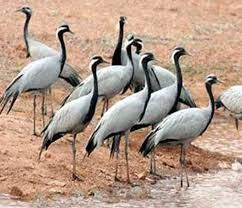

Malappuram district has a rich and vibrant history. The military headquarters of the Zamorins of Kozhikode since ancient times, this district was the site for many of the Mappila Revolts (uprising against the British East India Company in Kerala) between 1792 and 1921. Malappuram literally means a land atop hills and the region is enriched by three great rivers flowing through it - the Chaliyar, Kadalundi and the Bharathapuzha. Malappuram has made numerous contributions to the cultural heritage of Kerala. A famous centre for Hindu-Vedic learning and Islamic philosophy, the temples and mosques of this region are well known for their spectacular festivals.Along with historic monuments and diverse natural attractions, a range of cultural and ritual art forms add to its charm as a destination.
| The Kadalundi Bird Sanctuary | |
|---|---|
|  | A cluster of scenic islands, beautiful hills and rare avian species would intrigue and entice every birdwatcher on the planet. This is exactly what the Kadalundi Bird Sanctuary has to offer its visitors. One is greeted by the Kadalundi River flowing into the Arabian Sea while migratory birds casually flit about. This untouched land has over 60 species of migratory birds from across the planet that visits it during different times of the year. One can see seagulls, terns, sandpipers, sand plovers, red and greenshanks, turnstones and so on with November to April being the ideal viewing time. A small hill nearby gives you a panoramic view of the entire region. You can sit back and relax, with the odd otter peeking out at you playfully. This is indeed a paradise designed especially for bird lovers. |
| Adyanpara Waterfalls | |
|---|---|
|
Adyanpara Waterfalls are located in Nilambur in Malappuram district. It is among the most relaxing spots in the area. Adyanpara is an excellent spot for a nice swim and is easily accessible by road. The water itself is clean and pure and has had medicinal properties attributed to it. Located in Kurmbalangodu village (around 14 km away from Nilambur town), it is among the most picturesque destinations in the area. |